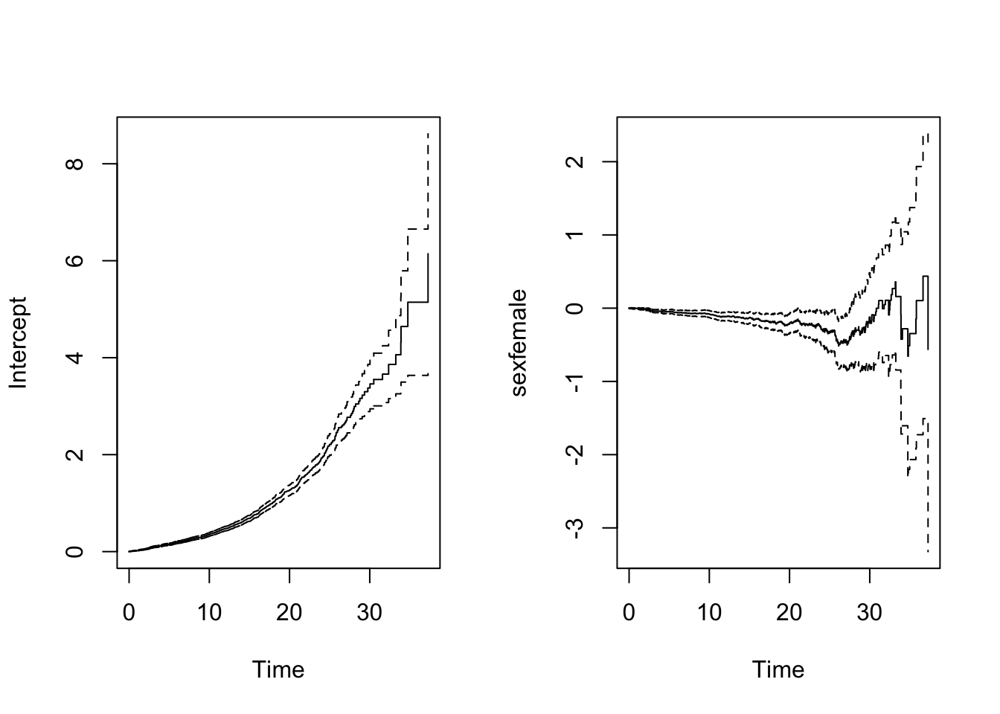

library(eha)
library(survival)Chapter 10 Causality and Matching
1 Philosophical Aspects on Causality
2 Causal Inference
- graphical models
- predictive causality
- counterfactual causality
Dynamic Path Analysis
2.1 Graphic Models
Wright (1921)
2.2 Predictive Causality
stochastic processes
Granger Test
Local Dependence
2.3 Counterfactuals
- Rubin school: matching
- Robins school: inverse probability weighting
3 Aalen’s Additive Hazards Model
for proportional hazards model
\[h(t|x) = h_0(t)r(\beta, x_i(t)), \quad t \gt 0 \]
additive hazards model
\[h(t|x_i) = h_0(t)+\beta_1(t)x_{i1}(t)+\ldots+\beta_p(t)x_{ip}(t), \quad t \gt 0\]
fit = aareg(formula = Surv(enter-60, exit-60, event) ~ sex, data = oldmort)
summary(fit) slope coef se(coef) z p
Intercept 0.1400 0.000753 2.58e-05 29.20 9.82e-188
sexfemale -0.0281 -0.000136 3.26e-05 -4.16 3.12e-05
Chisq=17.34 on 1 df, p=3.12e-05; test weights=aalenoldpar <- par(mfrow = c(1, 2))
plot(fit)
par(oldpar)4 Dynamic Path Analysis
5 Matching
5.1 Paired Data
5.2 More than one control
6 Conclusion
- Causal thinking is important
- Counterfactual reasoning and marginal models yield little insight into “how it works”
- Creation of pseudo-populations through weighting and matching may limit the understanding of how things really work
- Analyze the process as it presents itself, so that it is easier to generalize findings